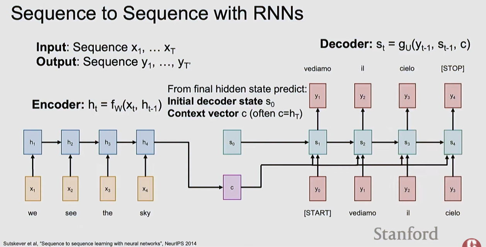

RNNs are neural networks designed for sequential data where the order of elements matters. Unlike feedforward networks, RNNs maintain an internal hidden state that acts as memory, allowing them to carry information across time steps.
The simplest RNN, named after Prof. Jeffrey Elman. The state consists of a single hidden vector h:
hₜ = tanh(Whh · hₜ₋₁ + Wxh · xₜ) ← hidden state update yₜ = Why · hₜ ← output (when needed)
Three weight matrices: Whh (hidden-to-hidden), Wxh (input-to-hidden),
Why (hidden-to-output). The tanh activation squashes values to [-1, 1].
The hidden state is the internal memory of the RNN — it summarizes everything the model has seen up to time t. The same weight matrix W is used at every time step — this is what makes it "recurrent."
Full BPTT through very long sequences is computationally intractable. TBPTT processes in chunks:
Image → CNN encoder → initial hidden state h₀ h₀ → RNN: [START] → "straw" → "hat" → END → yₜ
The CNN encodes visual features, initializes the RNN hidden state, and the RNN generates words autoregressively.
RNNs can be configured for different input-output patterns:
| Mode | Pattern | Example |
|---|---|---|
| One-to-one | 1 input → 1 output | Standard classification |
| One-to-many | 1 input → sequence output | Image captioning: image → sentence |
| Many-to-one | Sequence input → 1 output | Sentiment: sentence → positive/negative |
| Many-to-many (synced) | Seq → seq (same length) | Video: each frame → action label |
| Many-to-many (async) | Seq → seq (different length) | Translation: English → French |
When backpropagating through many time steps, the gradient is multiplied by the same weight matrix repeatedly:
Result: vanilla RNNs effectively only remember ~10–20 steps back.
Classical sequence-to-sequence RNNs compress the entire input into one final hidden state, then ask the decoder to generate everything from that single vector:
Input sequence → RNN encoder → final state c → RNN decoder → output sequence
This works on short sequences, but creates an information bottleneck on long inputs: the model must remember everything important in one fixed-size state.
The attention mechanism (now used in transformers) was originally developed to overcome this RNN limitation in machine translation. Instead of one context vector:
See attention-transformers — the attention mechanism born from RNN limitations, now dominant.

LSTMs saw enormous success in NLP before the transformer revolution (2017–2018). The key papers in the RNN → attention → transformer lineage: